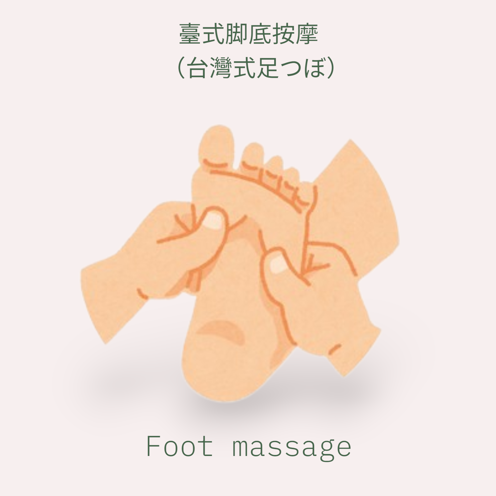
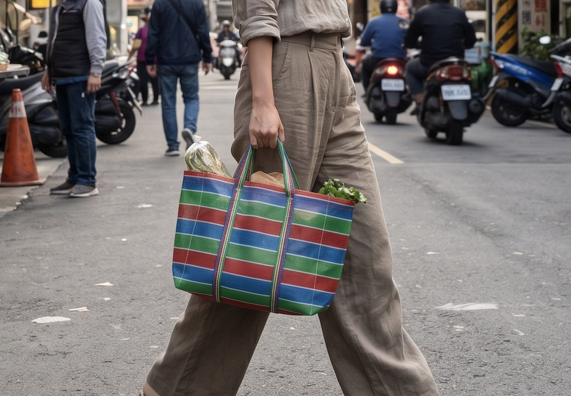

Market & Relaxation
出展ブース

日日工作室
ひびこうさくしつ
台湾直伝の本格派！里山の心地よい風の中で、心も体もリフレッシュする至福のひと時を。
台湾現地で10数年暮らした経験を持ち、台湾の師匠から直伝の技術を修めた実力派セラピストによる、本場・台湾の本格的な癒やしを体験してみませんか？
里山の爽やかな風を感じながら、日頃の疲れをスッキリ解放していってください。
台湾現地で10数年暮らした経験を持ち、台湾の師匠から直伝の技術を修めた実力派セラピストによる、本場・台湾の本格的な癒やしを体験してみませんか？
里山の爽やかな風を感じながら、日頃の疲れをスッキリ解放していってください。




※画像はイメージです
スワイプして見る
台湾レトロ雑貨
＆
お土産マーケット
＆
お土産マーケット
FRUITS & TEA LEAVES ＆ TAIWAN ZAKKA
台湾直輸入！おうちでも台湾気分を楽しめる、レトロで可愛い雑貨やこだわりのお土産をセレクトしました。フェスの思い出をご自宅やお土産に。現地台湾から買い付けた、日常がちょっと楽しくなるアイテムを集めました。
🍍 本場の完熟ドライフルーツ＆茶葉
大人気の甘みが詰まった「愛文マンゴー」や珍しい「グァバ」などのドライフルーツ、おうちで本格的な香りに癒やされる「台湾烏龍茶」を、丁寧な小分けパックでご用意しました。
🛍 レトロ可愛い！台湾の伝統雑貨
台湾のアイコンとも言える、赤・青・緑のボーダーがどこか懐かしくてお洒落な「漁師バッグ（茄芷袋）」やポーチをはじめ、日常使いにぴったりな「台湾トートバッグ」、手帳や小物に貼りたくなる「台湾立体シール」など、レトロポップな雑貨が並びます。
🕯 日常に祈りを添えるお線香
現地のお寺で見かける、どこかエキゾチックな香りの「台湾お参りお線香」も特別にお裾分け。
🍍 本場の完熟ドライフルーツ＆茶葉
大人気の甘みが詰まった「愛文マンゴー」や珍しい「グァバ」などのドライフルーツ、おうちで本格的な香りに癒やされる「台湾烏龍茶」を、丁寧な小分けパックでご用意しました。
🛍 レトロ可愛い！台湾の伝統雑貨
台湾のアイコンとも言える、赤・青・緑のボーダーがどこか懐かしくてお洒落な「漁師バッグ（茄芷袋）」やポーチをはじめ、日常使いにぴったりな「台湾トートバッグ」、手帳や小物に貼りたくなる「台湾立体シール」など、レトロポップな雑貨が並びます。
🕯 日常に祈りを添えるお線香
現地のお寺で見かける、どこかエキゾチックな香りの「台湾お参りお線香」も特別にお裾分け。
Lily's Taiwan Handmade
台湾人作家によるレトロモダン小物
台湾の知る人ぞ知る丁寧な手仕事。日常にそっと彩りを添える、一点もののハンドメイド雑貨。
どこか懐かしく、そして温かみのある空気感をそのまま形にしたような、特別なハンドメイドです。
手掛けるのは、台湾人作家の「Lily」。
独自のエッセンスを取り入れながら、現代のライフスタイルにも優しく馴染む、お洒落なポーチやぬくもり溢れる編み物小物をひとつひとつ丁寧に仕立てました。
大量生産にはない、手仕事ならではの繊細なディテールと、台湾の色彩感覚が光るデザインは、まさに「知る人ぞ知る」特別な逸品。大切な人へのギフトや、自分へのとっておきのご褒美にぴったりです。
世界にひとつだけの、あなただけのお気に入りと出会えますように。
どこか懐かしく、そして温かみのある空気感をそのまま形にしたような、特別なハンドメイドです。
手掛けるのは、台湾人作家の「Lily」。
独自のエッセンスを取り入れながら、現代のライフスタイルにも優しく馴染む、お洒落なポーチやぬくもり溢れる編み物小物をひとつひとつ丁寧に仕立てました。
大量生産にはない、手仕事ならではの繊細なディテールと、台湾の色彩感覚が光るデザインは、まさに「知る人ぞ知る」特別な逸品。大切な人へのギフトや、自分へのとっておきのご褒美にぴったりです。
世界にひとつだけの、あなただけのお気に入りと出会えますように。